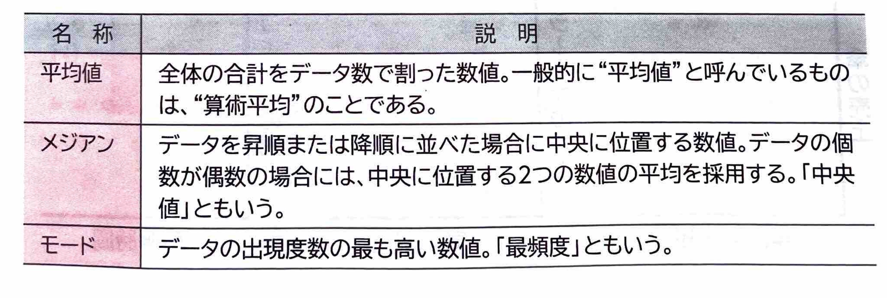
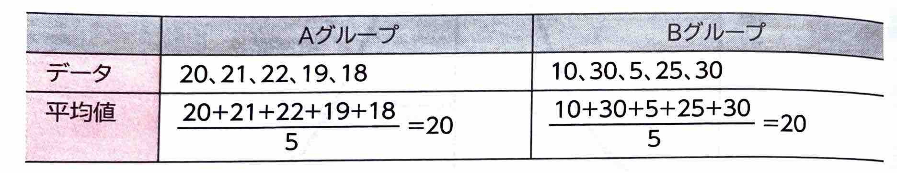
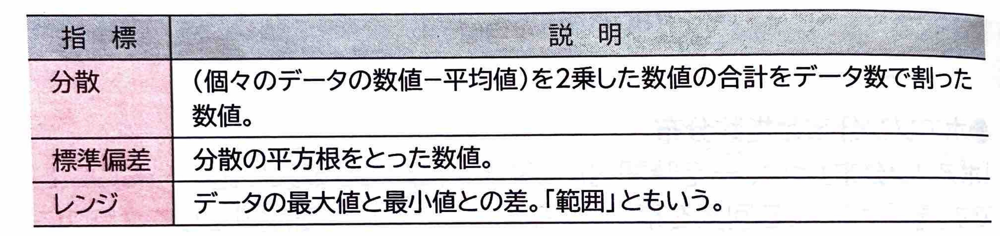
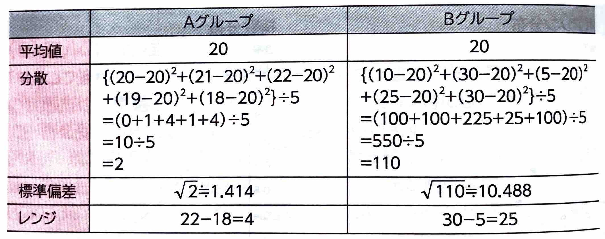
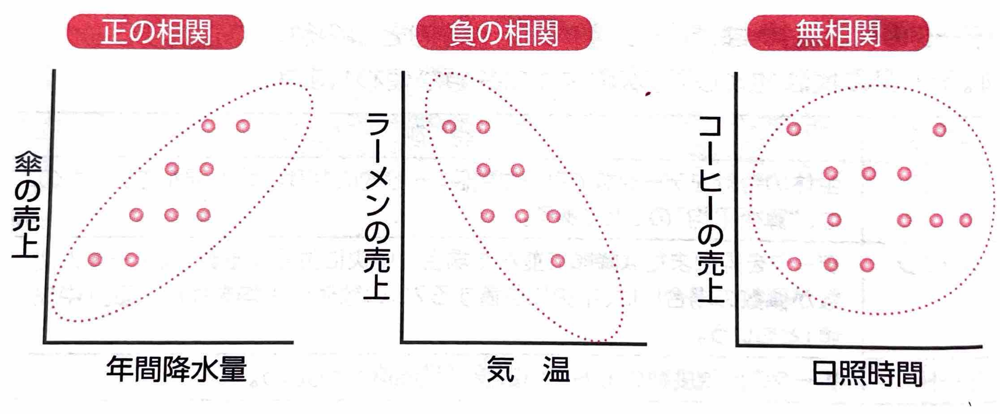
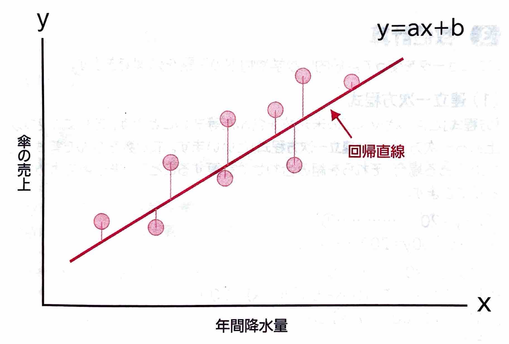
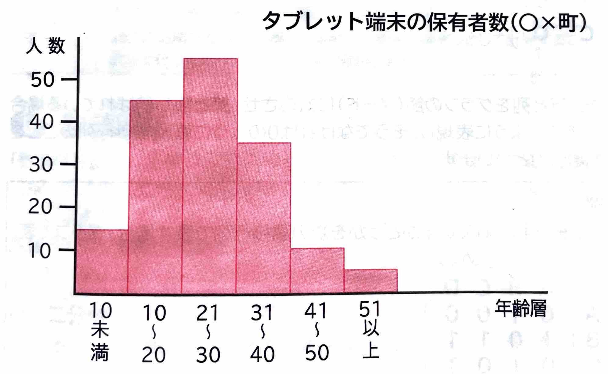

表示
｢統計｣
とは、収集したデータの規則性を調べたり、先のことを予想したりするための手法のことです。｢データの代表値｣
とは、データ全体の特性のひとつの数値で表現するものです。データの代表値として、次のような数値が使われます。
(2)データの散布度｢データの散布度｣
とは、個々のデータが平均値のまわりでどのようにばらついているかの度合いを数値で表現するものです。同じ平均値を持つデータの集まりでも、次のように特徴が異なる場合もあります。
この違いを表現する数値が、散布度の指標となる｢分散｣
、｢標準偏差｣
、｢レンジ｣
などです。
AグループとBグループの平均値は同じですが、散布度を計算すると次のようになります。
平均値だけではデータがどのようになっているか正確に分析できませんが、散布度を見ると、全体の分布状態を正確に把握できます。｢散布図｣
とは、2つの属性値を縦軸と横軸にとって、2種類のデータ間の相関係数を表したものです。例えば、正の相関のグラフからは、雨がよく降る年は傘がたくさん売れるといった原因と現象の関係がわかります。負の相関のグラフからは、暑い日にはラーメンの売上が悪いということから気温が上がると売上が下がるという関係がわかります。無相関のグラフからは、日照時間とコーヒーの売上との間にはお互いに関係がないことがわかります。
散布図を応用したものに｢回帰直線｣
があります。回帰直線とは、2種類のデータ間に相関関係があるとき、その関係を直線で表したものです。｢最小2乗法｣
といいます。
(4)ヒストグラム｢ヒストグラム｣
とは、集計したデータの範囲をいくつかの区間に分け、区間に入るデータの数を棒グラフで表したものです。
(5)推定｢母集団｣
、いくつかのデータを｢標本｣
といいます。｢推定｣
とは、このデータ数の少ない標本から、できるだけの精度の高い平均値を求め、母集団の傾向を判断するときに使われる統計的手法のことです。標本の平均値から、母集団の平均値(母平均)を推測し、母集団の統計学的な性質を推測します。